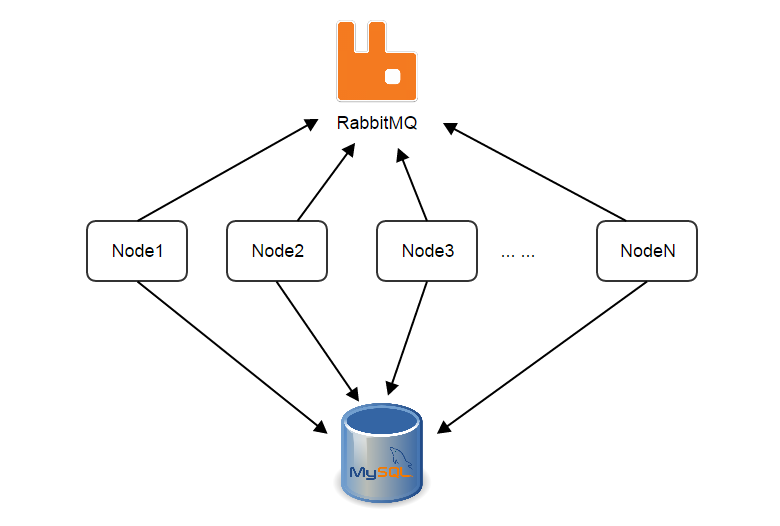
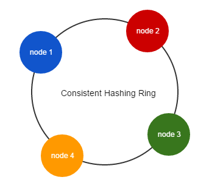
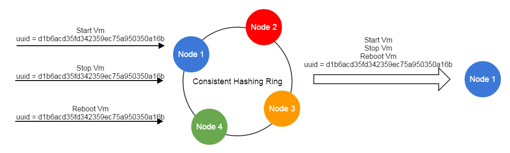
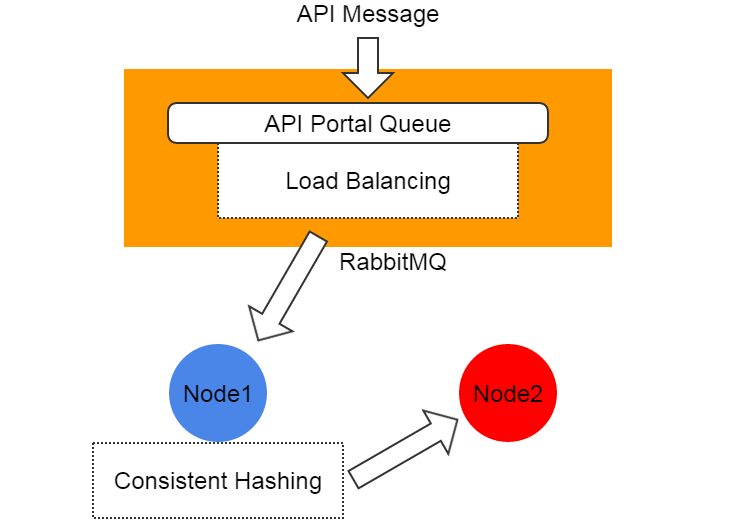

ZStack's Scalability Secrets Part 2: Stateless Services
Every ZStack service is stateless. Making services high available and scaled out can be as easy as starting redundant service instances then load balancing them; furthermore, ZStack encloses all services into a single process called management node, which makes deploying and managing services extremely simple.
The motivation
In ZStack's Scalability Secrets Part 1: Asynchronous Architecture, we have expounded the asynchronous architecture that makes a single ZStack management node competent for most cloud workload; however, when users want to setup a high available production environment or deal with super large concurrent workload, one management node is not enough. The solution is to build a distributed system where workloads can be spread out to every single management node; this way of adding new nodes to extend the entire capacity of the system is known as scale out.
The problem
Designing a distributed system is not easy. A distributed system, especially a stateful system, has to cope with consistency, availability, and partition tolerance(see CAP theorem), all of which are complicated. In contrast, a stateless distributed system relieves the complexity to some extent; first, because no state is shared amid nodes, the system is naturally consistent; second, as nodes are analogous, it's normally OK when the system encounters a partition problem; given that, a distributed system is usually preferred to be stateless rather than stateful. But designing a stateless distributed system is also difficult, and often more difficult than designing a stateful distributed system. Leveraging the strengths of message bus and database, ZStack builds a stateless distributed system that consists of stateless services.
As a stateless service is the foundation making the entire system stateless, before discussing what it is, let's understand what the "state" is. In ZStack, resources such as hosts, virtual machines, images, and users are managed by individual services; when there are more than one service instances in the system, resources are split to different instances. For example, let's say there are 10,000 virtual machines and two virtual machine service instances, ideally each instance will manage 5000 virtual machines:

As there are two service instances, before making a request to a virtual machine, the requester must know which instance is managing that virtual machine; otherwise it won't know where to send the request. The knowledge like "which service instance is managing what resource" is the state we are talking. If a service is stateful, states are with the service; the requester needs to consult the states somewhere; and services need to exchange states when the number of service instances changes, for example, when a new service instance joins or a current service instance leaves.

The states exchange is hairy and error-prone, which usually limits the scalability of the system. In order to make the system more reliable and easier to scale out, it would be ideal to make services stateless by separating states from them(see Service Statelessness Principle). With stateless services, requesters should no longer need to ask where to send a request, and services should no longer need to exchange states when a new service instance joins or an old service instance leaves.
Note: In the following contents, for the sake of simplicity, terms "service" and "service instance" are used interchangeably.
The services and the management node
Services, which communicate with each other through the central message bus -- RabbitMQ, are first-class citizens in ZStack.

Unlike usual microservices architecture that each service typically runs in the separate process or separate machine, ZStack encloses all services in a single process called management node. We have good reasons for this so-called in-process microservices architecture that you will see in The In-Process Microservices Architecture.
A management node is a full functional ZStack software. As containing stateless services, management nodes share no states but heartbeat records and a consistent hashing ring that we will elaborate soon. The heartbeat is used to monitor health of management nodes, once a management node stops updating its heartbeat after a given period, other management nodes will evict it and start taking over resources it managed.

Stateless Services
The core technology to implement stateless services, specific to ZStack's business logic, is the consistent hashing algorithm. When booting, every management node will get assigned a version 4 UUID(the management node UUID) that will be used with the service name to register a service queue on the message bus. For example, a management node may have service queues registered like:
zstack.message.ansible.3694776ab31a45709259254a018913ca
zstack.message.api.portal
zstack.message.applianceVm.3694776ab31a45709259254a018913ca
zstack.message.cloudbus.3694776ab31a45709259254a018913ca
zstack.message.cluster.3694776ab31a45709259254a018913ca
zstack.message.configuration.3694776ab31a45709259254a018913ca
zstack.message.console.3694776ab31a45709259254a018913ca
zstack.message.eip.3694776ab31a45709259254a018913ca
zstack.message.globalConfig.3694776ab31a45709259254a018913ca
zstack.message.host.3694776ab31a45709259254a018913ca
zstack.message.host.allocator.3694776ab31a45709259254a018913ca
zstack.message.identity.3694776ab31a45709259254a018913ca
zstack.message.image.3694776ab31a45709259254a018913ca
zstack.message.managementNode.3694776ab31a45709259254a018913ca
zstack.message.network.l2.3694776ab31a45709259254a018913ca
zstack.message.network.l2.vlan.3694776ab31a45709259254a018913ca
zstack.message.network.l3.3694776ab31a45709259254a018913ca
zstack.message.network.service.3694776ab31a45709259254a018913ca
zstack.message.portForwarding.3694776ab31a45709259254a018913ca
zstack.message.query.3694776ab31a45709259254a018913ca
zstack.message.securityGroup.3694776ab31a45709259254a018913ca
zstack.message.snapshot.volume.3694776ab31a45709259254a018913ca
zstack.message.storage.backup.3694776ab31a45709259254a018913ca
Note: You should have noticed all queues are ended with the same UUID that is the management node UUID.
Resources such as hosts, volumes, virtual machines are identified by UUID as well; messages, often related to resources, are flowing among services; before sending a message, the sender must choose the receiver service based on the resource's UUID, where the consistent hashing algorithm comes into play.
Consistent hashing is a special kind of hashing such that when a hash table is resized and consistent hashing is used, only a portion of keys needs to be remapped. For more details of consistent hashing, a good read is here. In ZStack, management nodes make up of a consistent hashing ring as follows:

Every management node maintains a copy of the ring that contains UUID of all management nodes in the system; when a management node joins or leaves, a lifecycle event will be broadcast to other nodes through the message bus, which makes those nodes expand or squeeze their rings to represent current system state. When sending a message, the sender service will use the resource's UUID to hash out the UUID of the destination management node. For example, to send a StartVmInstanceMsg where VM's UUID is 932763162d054c04adaab6ab498c9139, the pseudo code is like:
msg = new StartVmInstanceMsg();
destinationManagementNodeUUID = consistent_hashing_algorithm("932763162d054c04adaab6ab498c9139");
msg.setServiceId("vmInstance." + destinationManagementNodeUUID);
cloudBus.send(msg)With a stable ring, messages with the same resource UUID are always routed to the same service on the certain management node, which is the basis of ZStack's lock-free architecture(see ZStack's Scalability Secrets Part 3: Lock-free Architecture).

When the ring squeezes or releases, because the nature of consistent hashing, only a few nodes will be affected slightly.
Because of the consistent hashing ring, a sender doesn't need to know which service instance is about to handle the message; instead, that will be hashed out. Services don't need to maintain and exchange information that what resources they are managing; all they need to do is handling incoming messages because the ring guarantees messages will find the correct service instance. It is how the services become dead simple and stateless.
Apart from messages that contain a resource UUID(e.g. StartVmInstanceMsg, DownloadImageMsg), there is a kind of messages that have no resource UUID associated, which are normally creational messages(e.g. CreateVolumeMsg) and non-resource messages(e.g. AllocateHostMsg) that don't manipulate an individual resource. Given those messages can be sent to services on any management nodes, they are deliberately sent to the local management node, as the sender and receiver are on the same node, the receiver is surely available when sender sends the message.
For API messages (e.g. APIStartVmInstanceMsg), there is a special handling that they are always sent
with a well-known service ID api.portal. On the message bus, a global queue named zstack.message.api.portal is shared by API services
of all management nodes, messages with service ID api.portal will be automatically load balanced to one of the API service which will route
the message to the correct destination service using consistent hashing ring. By doing this, ZStack hides details of message routing from API clients,
simplifying the work of writing a ZStack API client.
msg = new APICreateVmInstanceMsg()
msg.setServiceId("api.portal")
cloudBus.send(msg)
Summary
In this article, we demonstrated the way ZStack scales out by constructing a stateless distributed system. Because the management nodes share very little information, it is very easy to build a big cluster that may have tens of or even hundreds of management nodes. However in reality, for private cloud, two management nodes are good enough for purposes of HA and scalability; for public cloud, administrators can create a farm of management nodes according to the workload. Relying on the asynchronous architecture and the stateless services, ZStack is capable of handling very large concurrent tasks that existing IaaS software can barely handle.